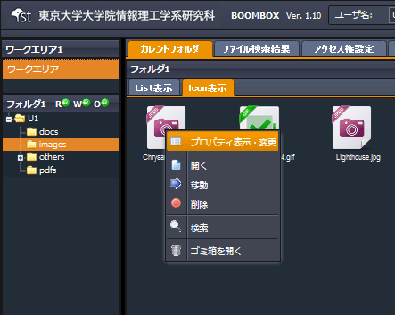
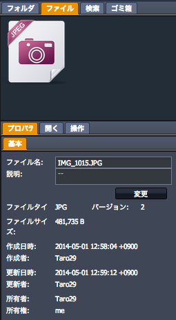
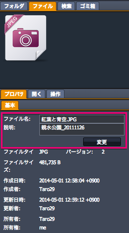
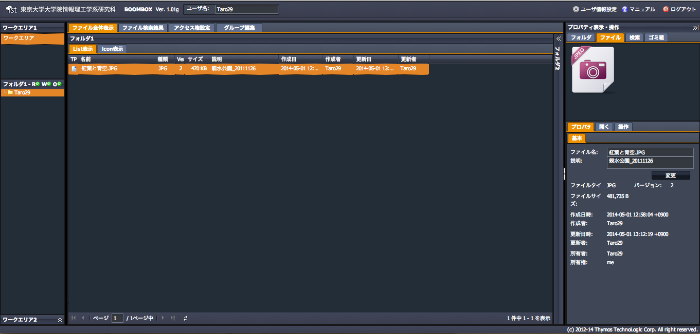

SecretFilesマニュアル
4.SecretFilesサービス(操作編)
4.2.3 ファイルプロパティ変更
ファイルのプロパティ（ファイル名や説明）の変更手順を説明します。
(1) 対象ファイルを選択し右クリックメニューを開く
『プロパティの表示、編集』をクリックします。

(2) 自動的に以下構成の右ペインが開く
右ペインにて、【ファイルタブ】＋【プロパティタブ】が開きます。

(3) 【プロパティタブ】を編集
ファイル名を変更、説明を入力して、変更をクリックすると、入力した内容がファイルプロパティとして登録されます。また、説明欄に追加した情報は、ファイル検索のキーワードとして利用できます。

(4) ファイル名変更と説明の追加が完了
中央ペインのリスト表示、【プロパティタブ】にてファイル名が変更され、説明が追加されました。
